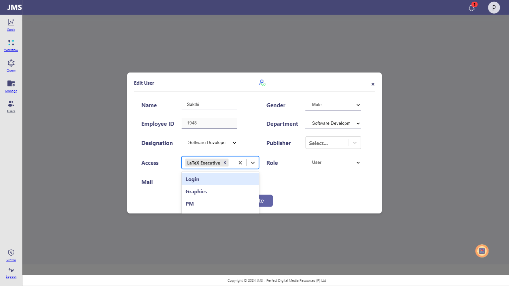

-
verifyhometitle
7:41:28 PM / 00:00:00:487 Pass
verifyhometitle
08.13.2024 7:41:28 PM 08.13.2024 7:41:28 PM 00:00:00:487 · #test-id=1HomePageTestsStatus Timestamp Details Info 7:41:28 PM Login successfully Info 7:41:28 PM verifing the title Info 7:41:28 PM Title expected as LMS Info 7:41:28 PM JMS right Pass 7:41:28 PM Test Passed Info 7:41:28 PM Trace saved: traces/verifyhometitle.zip -
verifyurl
7:41:28 PM / 00:00:00:206 Pass
verifyurl
08.13.2024 7:41:28 PM 08.13.2024 7:41:29 PM 00:00:00:206 · #test-id=2HomePageTestsStatus Timestamp Details Info 7:41:29 PM Login successfully Info 7:41:29 PM verifing the url Info 7:41:29 PM url expected as https://pdmrindia.co.in/tester/LMS/auth/signin Info 7:41:29 PM http://192.168.1.39:3002/jms/stock is right Pass 7:41:29 PM Test Passed Info 7:41:29 PM Trace saved: traces/verifyurl.zip -
verifyIconIsDisplayed
7:41:29 PM / 00:00:01:138 Pass
verifyIconIsDisplayed
08.13.2024 7:41:29 PM 08.13.2024 7:41:30 PM 00:00:01:138 · #test-id=3HomePageTestsStatus Timestamp Details Info 7:41:29 PM verify icon is display or not Info 7:41:30 PM verify icon is displayed Pass 7:41:30 PM Test Passed Info 7:41:30 PM Trace saved: traces/verifyIconIsDisplayed.zip -
JMS-224 : Complete article and Check count - Version 1
7:41:31 PM / 00:00:40:699 Fail
JMS-224 : Complete article and Check count - Version 1
08.13.2024 7:41:31 PM 08.13.2024 7:42:12 PM 00:00:40:699 · #test-id=4Status Timestamp Details Info 7:41:31 PM Parameter: 1000 Info 7:41:31 PM Parameter: 1000 Info 7:41:31 PM Parameter: Auto(AT) Info 7:41:31 PM Parameter: 173012 Info 7:41:31 PM Parameter: AutomationTest_ Info 7:41:31 PM Parameter: 1730 Info 7:41:31 PM Parameter: Test Workflow By Santhosh Info 7:41:31 PM Parameter: 1948 Info 7:41:31 PM Parameter: 1948 Info 7:41:31 PM Parameter: 1915 Info 7:41:31 PM Parameter: 1915 Info 7:41:31 PM Parameter: 4321 Info 7:41:31 PM Parameter: 4321 Fail 7:42:11 PM Test Failed Fail 7:42:11 PM Info 7:42:12 PM Trace saved: traces/VerifyUnassignPub.zip
-
com.microsoft.playwright.TimeoutError
1 tests
com.microsoft.playwright.TimeoutError
1 failedStatus Timestamp TestName Fail 19:41:31 PM JMS-224 : Complete article and Check count - Version 1
-
HomePageTests
3 tests
HomePageTests
3 passedStatus Timestamp TestName Pass 19:41:28 PM verifyhometitle Pass 19:41:28 PM verifyurl Pass 19:41:29 PM verifyIconIsDisplayed
Started
Aug 13, 2024 07:41:18 PM
Ended
Aug 13, 2024 07:42:13 PM
Tests Passed
3
Tests Failed
1
Tests
Log events
Timeline
Tags
| Name | Passed | Failed | Skipped | Others | Passed % |
|---|---|---|---|---|---|
| HomePageTests | 3 | 0 | 0 | 0 | 100% |
System/Environment
| Name | Value |
|---|---|
| Environment | QA |
| Tester | Sakthi |